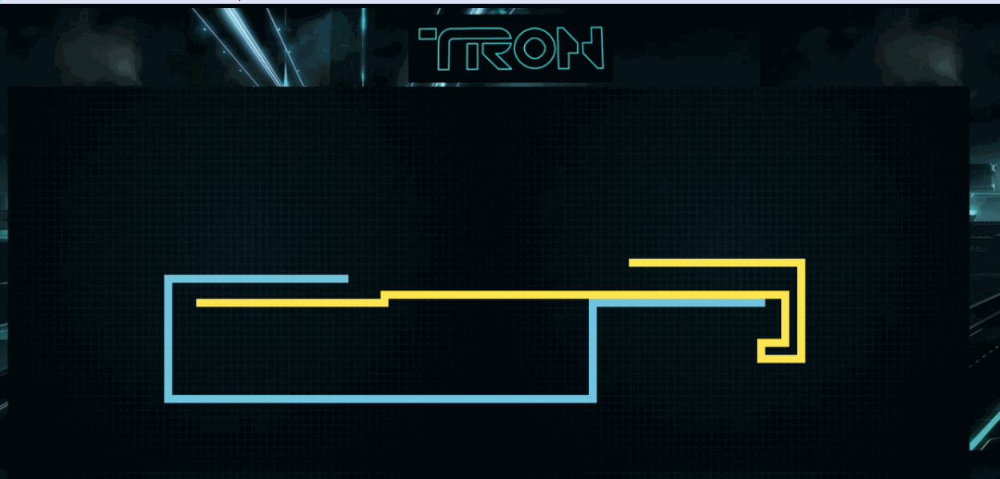

Mini TRON
Personal Project
I built this for fun- mainly to learn javascript. I do not own any of these logos, ideas, or the Tron franchise so please don't sue. Built using: javascript, HTML/CSS
How it Works
The user can control the blue player using either the WASD or arrow keys. A javascript eventlistener checks for these keyboard events and makes sure that you don't kill yourself by going backwards (hitting the same key twice). The light trails are rendered using the draw feature in HTML canvas. All moves are stored in a history array so we know when a collsion has occured. The yellow player is controlled by a super simple "AI". It merely pings all 4 directions and chooses the best move- the move that doesn't result in collison. So it doesn't conspire against you using minimax or anything evil like that. Yet.
Example Runs

